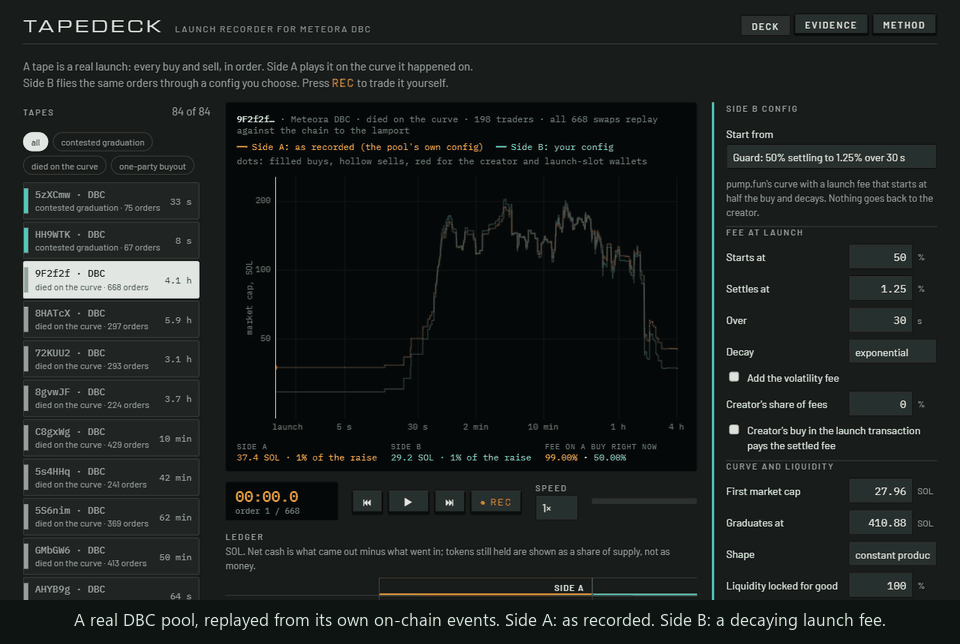

Play back any DBC launch. Fly it again under a different config. Or take the stick and trade it yourself. On an engine that is checked against the chain.

Curve shape, launch fee, who gets the fee, who owns the liquidity after migration: a launchpad sets all of it in one config, once, and then thousands of launches live with it. The tools for choosing are calculators. They show the curve. They do not show what real order flow does on it: the bundle in the launch slot, the wallets that sell into the first minute, the buyers who arrive late.
The shelf holds 84 tapes: 24 DBC pools read from the chain and 60 pump.fun launches recorded wallet by wallet.
Do not take the number on trust: paste a pool of your own into the deck and it runs the same check in front of you.
History only covers the swaps people make, and nobody makes exact-out swaps. So those were put to the program itself: 2,345 transactions simulated against the live program on 262 open pools, 2,601 exact-out swaps, 0 disagreements. Nothing signed, nothing sent.
Prices and fees come from Meteora's SDK. Around them the engine does what the program does and the SDK leaves out: the volatility tracker before and after each swap, the fee buckets, the minimum-fee first swap, completion at the threshold. A pump.fun tape is kept only if a DBC config equal to pump.fun's curve reproduces its recorded fills: of 1,206 recorded, 584 were too short to play, 61 failed the check and 561 passed.
The cheapest way onto every "just migrated" feed is to buy your own curve in the launch transaction. The engine prices that round trip for any config: buy the curve, take back what the config hands a creator, sell out. Then every config and pool on mainnet was read, 1,768,464 pools under 543,738 configs.
On pump.fun's own curve the round trip costs about 19 SOL, mostly the fifth of the raise that stays behind in the pool. A config decides that number. Tapedeck shows it next to every design, and shows what the same buyout tape would have paid under yours.
getPoolConfigsByOwner filters on the leftover receiver, not the fee claimer. The SDK team opened a fix the same day (PR #124). The census shows how far it reaches: the two differ for 37% of configs on mainnet (200,278).